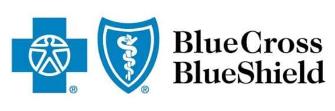
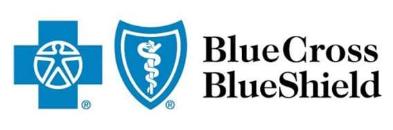
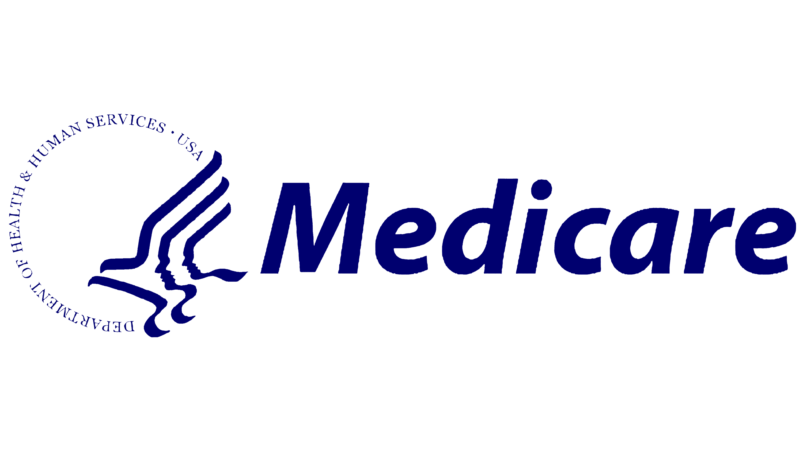
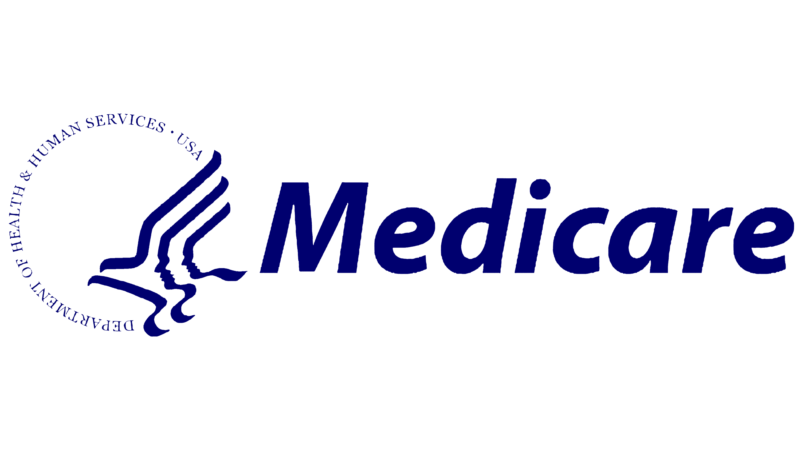
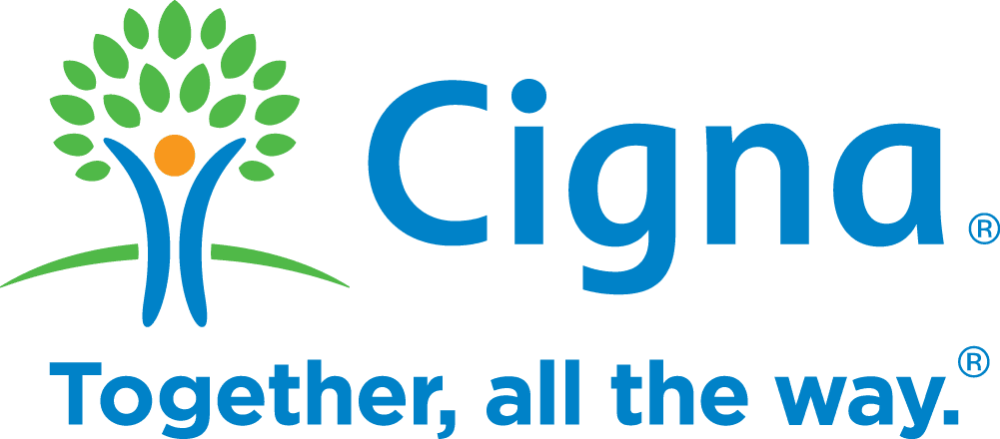
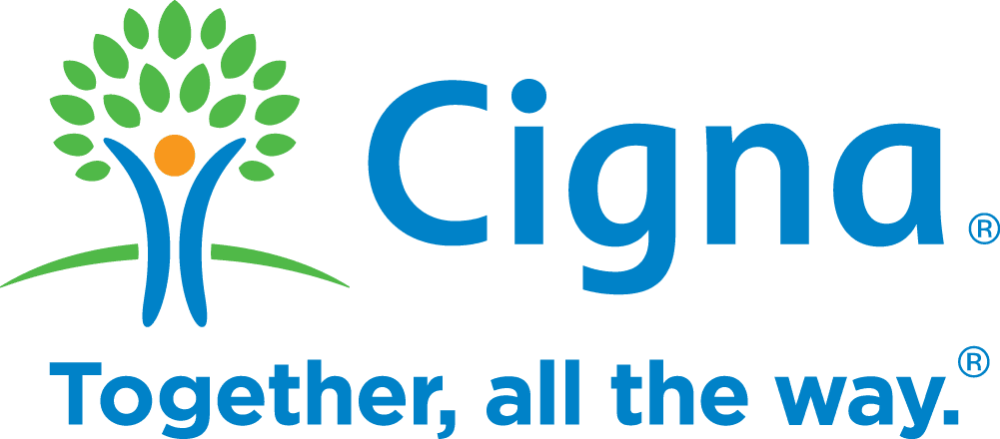

COVID-19 illnesses have ranged from very mild-to-severe, including illness resulting in death. Most COVID-19 illness is mild,
serious illness can happen and may cause some of your other medical conditions to become worse. Older people and people of all
ages with severe, chronic medical conditions like heart disease, lung disease, and diabetes, for example, seem to be at higher
risk of being hospitalized for COVID-19.
Both the Pfizer COVID-19 pill and the Merck COVID-19 pill are FDA authorized that can be taken at home. The Pfizer COVID
medication, Paxlovid, is taken twice daily for 5 days. The Merck COVID pill is taken twice a day, for 5 days. Both medications
must be taken within 5 days of COVID symptom onset in order to be effective.
Schedule an appointment with Mobile One Docs today!

 


 



 
